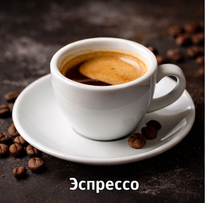

Эспрессо Классик
Насыщенный вкус с легкой горчинкой и плотной пенкой — идеальный старт дня.
Мы обжариваем каждое зерно с вниманием к деталям, чтобы каждый глоток приносил тепло, энергию и хорошее настроение.
Посмотреть менюCoffeeMood — это место, где утро начинается правильно. Мы варим кофе из свежей арабики, обжариваем зёрна небольшими партиями и верим, что хороший кофе — это не спешка, а настроение. Наши кофейни находятся в самом сердце Москвы, там, где город просыпается вместе с первым эспрессо.
📞 Телефон: +7 (926) 384-72-19
📍 Адрес: Загрузка адреса…